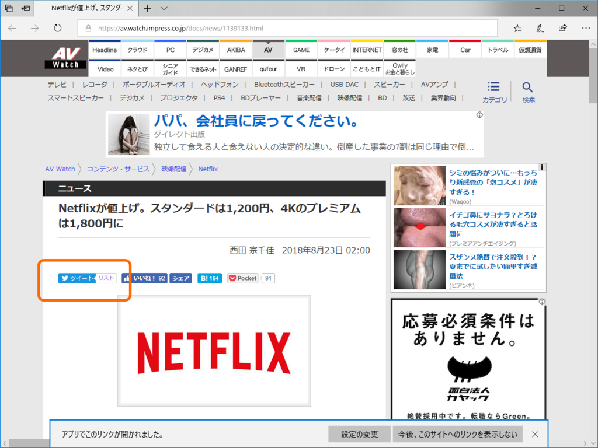
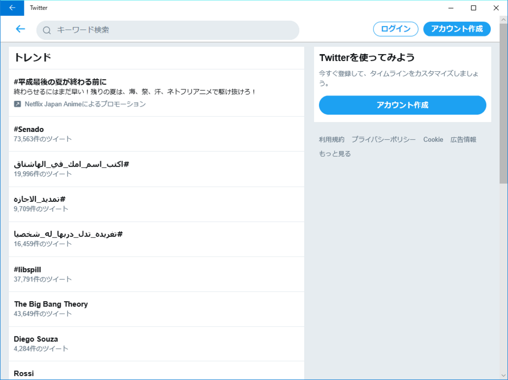
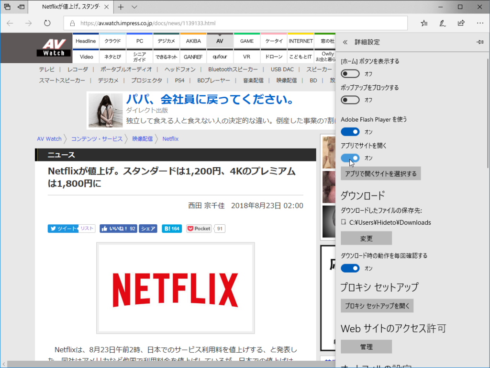
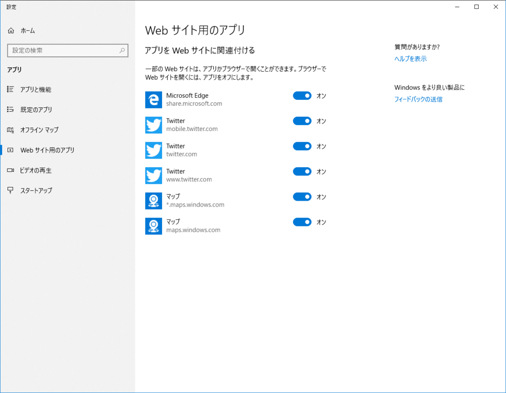

Windows 10 向け Twitter アプリ（6.1.4.0）の URL ハンドリング機能
公開日：
AV Watch*1に誤植があったので Twitter アカウントにメンションしてあげようかなって思ったんだけど、報告がかぶったら相手もウザいであろうと、まず Twitter のリストをのぞいてみた。

すると、Microsoft Edge のリンクから Twitter アプリが開くではないか。

しかも、全然関係ないページが（死
そういえばこの前、PWA 版 Twitter（Twitter Lite）がアップデートされて URL のハンドリングが行えるようになったんだね。
でも、残念ながらこの機能はオフだ。ちゃんと動かないんだから仕方ない。Edge の画面下部に出てくるバーで［設定の変更］ボタンをクリックし、［設定］パネルで機能を無効化する。ちなみにこのあまりイケていない［設定］パネルは、次期バージョン Windows 10 RS5*2で多少マシになる予定だ。

ちなみに、URL ハンドリング関連の設定は「設定」アプリの［アプリ］ー［Web サイト用のアプリ］セクションにまとめられている。本来は有用なはずなので活用されてほしいのだけど……Progressive Web Apps のちょっといい機能ってヤツじゃん？

関係ないけど、一番上の share.microsoft.com ってなんだろ。何かに使えそうな予感する。
今回の教訓
新しい便利機能も不具合があったら即無効化されてしまう（ヒトのこと言えないけど
追記（2018/08/23 23:30）
URL ハンドリングもうやめて pic.twitter.com/CMTAiiE9Iu
— だるやなぎ准将 (@daruyanagi) August 23, 2018
ログインしてないとダメみたい。いろいろテスト不足だな。